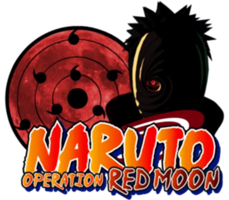

Команда молодых энтузиастов, с детства питавших страсть к творчеству. Наткнувшись, однажды, на непримечательную китайскую 2д игру в жанре файтинг, открыли в себе разработчиков и использовали её как основу для нескольких простых модификаций, берущих свои идеи из популярных в то время аниме жанра сёнен. Сейчас занимаемся разработкой собственного игрового движка на языке Lua. Опираясь на прошлый опыт и поддержку немногочисленной, но верной аудитории, мы стараемся стать лучше, превзойти старых себя и создать уникальное и качественное решение. Мы работаем не с целью наживы, мы творим для души и стремимся разжечь у нового поколения любовь к творчеству и программированию.
О нас
История команды
В далёком 2012 году, на одном небольшом форуме, я познакомился с Эдом. По детской наивности мы сразу же решили объединиться и делать что-то своё, вместе. Так и началась история нашей команды.
Изначально команда называлась ERKD. Эта аббревиатура не имела логической расшифровки. Она получилась из слияния фраз "Evolution Retryborn" и "Knight of Death".
Очевидно, то, что мы делали, не было идеальным. Скорее даже, вызывало отвращение у тех, кто это видел. Но мы не сдавались! Мы продолжали стараться и идти к нашей цели — сделать что-то достойное, своими руками. Постепенно мы становились опытнее, наш проект обретал форму, к нему появлялся интерес у публики, а у нас появлялись помощники.
Через какое-то время, многие из участников основного проекта заявили об открытии своих собственных, что расширило базу заинтересованных в нашем творчестве. Многие из них были готовы помогать нам и итоге стали нашими хорошими друзьями. Но время шло, мы росли, как и наше самомнение. Желание наживы отодвинуло тягу к творчеству на второй план, что привело к разладу между нами с Эдом и разделению команды на 2 части: бывшую ERKD, которая оставила за собой основной проект, и новую, нынешнюю ATOM, за которой ушло большинство участников и все второстепенные проекты.
Созданная ATOM получила своё название от "Aratana Takami O Mezasu", что в переводе с японского и значит "Стремящиеся к новым вершинам".
На протяжении многих лет мы менялись, старые люди уходили из разработки, но приходили и новые, заинтересованные и стремящиеся к развитию. Именно это стремление к развитию, идея роста над собой и является основным посылом нового названия команды. В конечном итоге, мы с Эдом вновь нашли общий язык и приложили усилие для завершения нашего с ним детища. Так, успешно закончилась история ERKD.
Однако, АТОМ остался и по сей день, мы трудимся, желая подать пример подрастающему поколению. Мы хотим показать, что творчество — это прекрасно, что программирование — это интересно. Многие в наше время стали забывать что такое хобби, что такое созидание и что делать что-то можно не только ради заработка, но и для души. Мы стараемся удержать в своих сердцах остатки тех прекрасных дней нашего детства, когда мы были наивными и бескорыстными, когда мы желали поделиться с миром нашим творчеством. Сейчас многих душит работа, учеба, отношения, но во всём этом бесконечном круговороте социума всегда можно найти немного времени, для того чтобы творить ради творчества и пока это так, мы чувствуем себя немного легче.
Наши проекты
В разработке:
NORM: Naruto Operation Red Moon
Версия: 1.19 (Старый движок)

Скачать NORMСкачать NORM 1.19 на старом движке (Яндекс.Диск)Скачать NORM 1.19 на старом движке (Dropbox)Проект посвящён аниме «Наруто», а именно преступной организации «Акацуки» - главным протагонистам данного аниме. Погрузитесь в воспоминания о тех временах, когда все считали Итачи злодеем, переживали за судьбу Гаары или плакали над смертью харизматичного Сасори. Когда люди спорили: кто же скрывается под маской Тоби? Почувствуйте вкус ностальгии и пустите скупую слезу по былым годам. И помните «Весна юности все еще не закончена!»
Завершенные:
Бывший основной проект команды ERKD, а так же один из лучших вышедших (на период начала 2016 года) проектов подобного типа. Посвящен аниме «Наруто», страдает критической нехваткой персонажей, но отличается от остальных прекрасной графикой и динамикой. Официально завершён и закрыт.
Проект по аниме «Блич». Несколько версий уже увидели свет. Находится в замороженном состоянии.
Проект, претерпевший самое большое количество перерождений, за свою историю. Посвящён аниме «Хвост Фей». После очередного перерождения проект не будет уступать по возможностям и качеству нашей лучше работе.
Команда
Ничто не говорит о команде так, как её труды. Тем не менее, немаловажным будет и знакомство с её участниками.